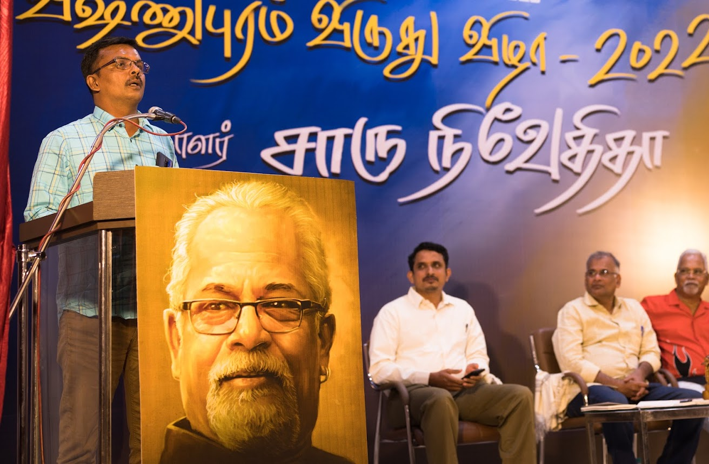
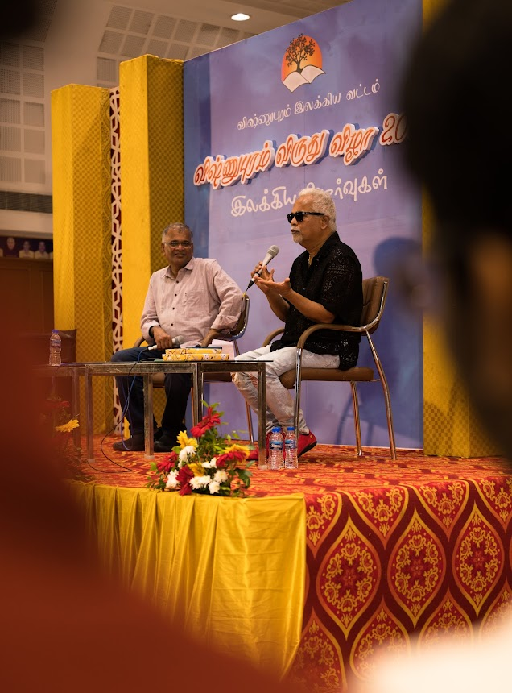
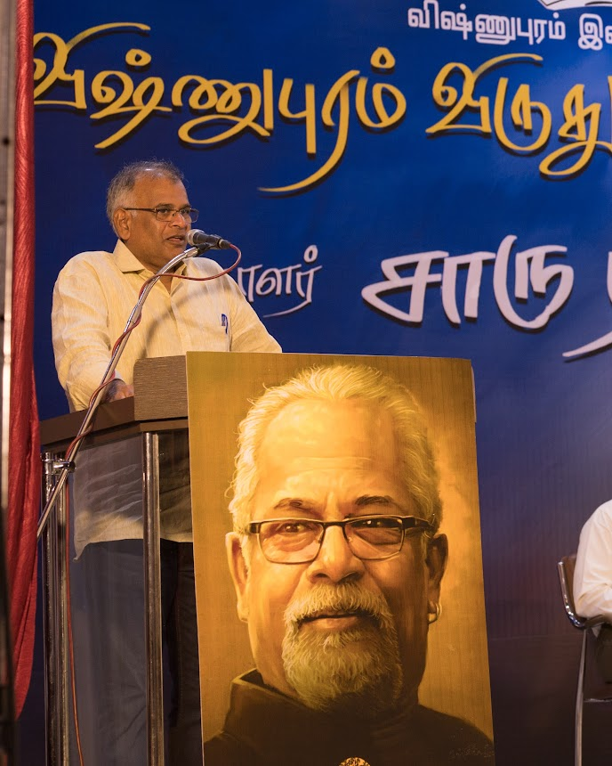
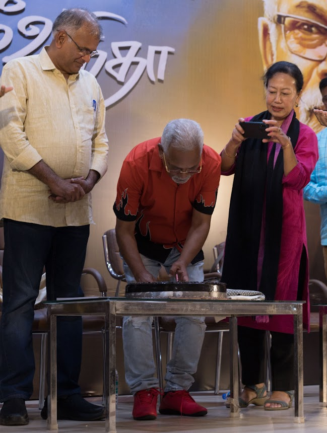
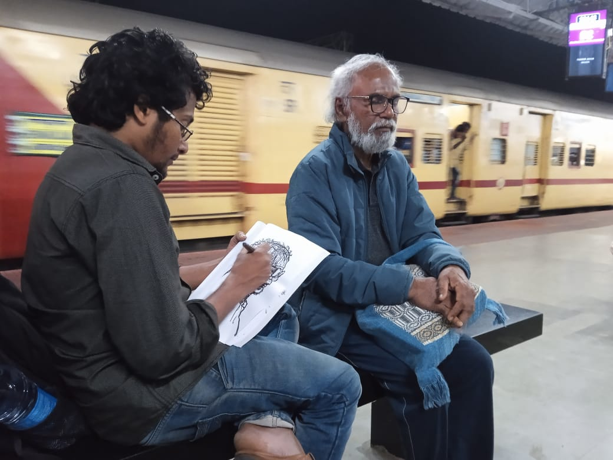
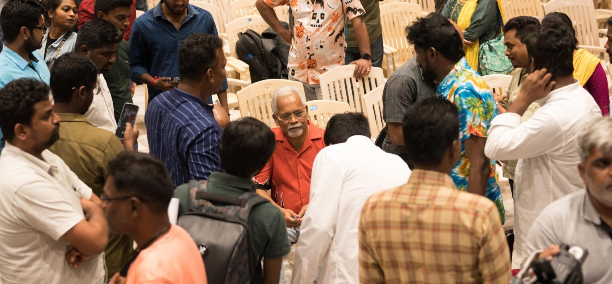
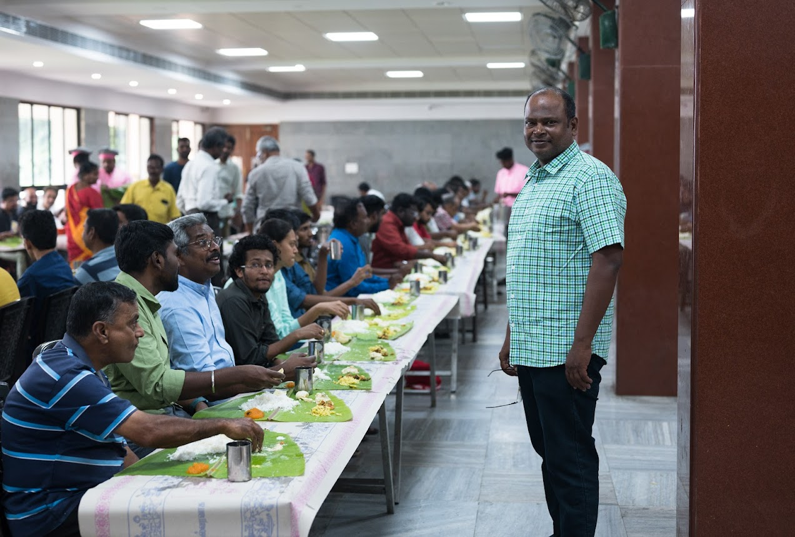
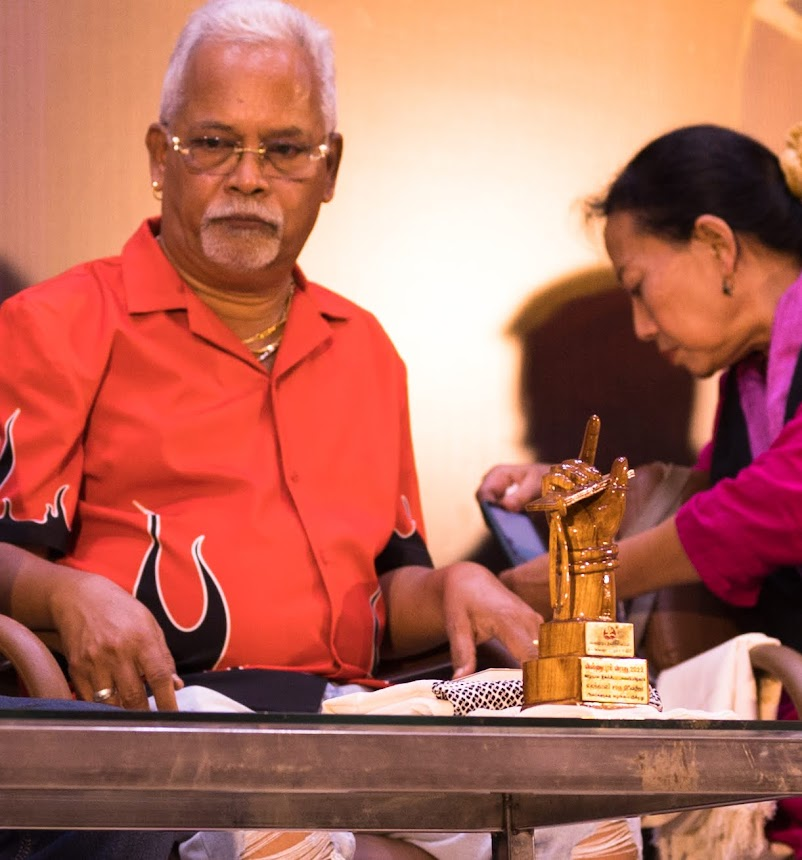
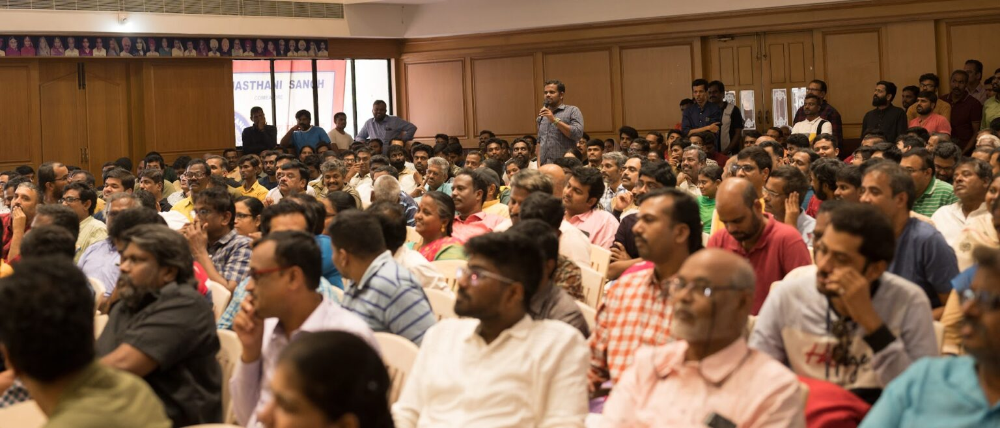

Living Tamil Association for World Literature (LTAWL)
The 2022 festival, held at the Rajasthani Bhavan, drew the biggest crowd in the Circle's history to that point — translated from the original Tamil accounts.
The 2022 festival, held on 18 December, coincided by design with the birthday of that year's honouree, the writer Charu Niveditha. A collection of critical essays on his work, Thanivazhi Payani ("Solo Journey"), was released at the ceremony, and the evening closed with a cake-cutting on stage — a small, informal touch that Jeyamohan felt suited a festival built more on friendship than on ceremony. In his own remarks, Jeyamohan returned to a long-standing conviction: that literary criticism is only honest when the critic is first and foremost a reader in close, intimate dialogue with the work — not a theorist applying a framework from outside it.

Jeyamohan opened his account of 2022 by noting a small tradition of his own: that he tries to write at least one line about the festival every year. This time, he had no hesitation in calling it the largest gathering the Circle had held to date — and, by his account, a deeply satisfying one.
The festival ran from 16 to 18 December 2022, based at the Rajasthani Bhavan, a heritage building that served as the main venue. “We arrived early on the morning of the 16th,” Jeyamohan wrote, describing a gathering that drew more than 500 participants across each of its discussion forums. Established writers — Nanjil Nadan, Devadevan, M. Gopalakrishnan, Su. Venugopal and Charu Niveditha among them — shared the space with a new generation of younger writers, including Karthik Balasubramanian, Agaramudhalvan and Kamaladevi.


Photographer and visual artist A.V. Manikandan led a session on photography and the visual arts that several attendees singled out as the most enriching of the festival, covering sessions on literary theory, historical research and Sri Lankan Tamil literary contexts. Visiting guests Kanishka Gupta, Mary Therese Kurkgali and Mamang Dai remarked on the unusually high level of intellectual engagement among the young readers present.


The programme itself was deliberately trimmed to seven major sessions — fewer than in some earlier years — precisely so that there would be more room left for informal conversation between them. Mornings began with tea and small literary circles forming spontaneously around the grounds; afternoons brought traditional Tamil food, tamarind rice and yogurt rice among it; evenings closed with a literary quiz and the screening of a documentary, The Outsiders, directed by Araathu. Several new books were released at the festival, including work by Sunil Krishnan and Le. Ra. Vairavan, alongside new translations of contemporary fiction. True to form, conversation among the writers and readers who had travelled in ran on well past midnight.


One small, fondly-recalled incident from the festival: when writer Thevadevam's train departure was delayed, the artist Jayaram sat with him at the railway station and sketched his portrait on the spot to pass the time. What Jeyamohan chose to emphasise, in looking back on the festival, was not any single session but its underlying character: passionate, uncompromising literary argument carried by serious readers rather than casual visitors — a gathering that, for those few days, felt less like an event and more like an extended literary family, one that in 2022 alone had spun off three new initiatives of its own: Tamil Wiki, the Neeli e-magazine, and a translation network.



Translated and adapted from the original Tamil accounts: jeyamohan.in/177408 and jeyamohan.in/177322